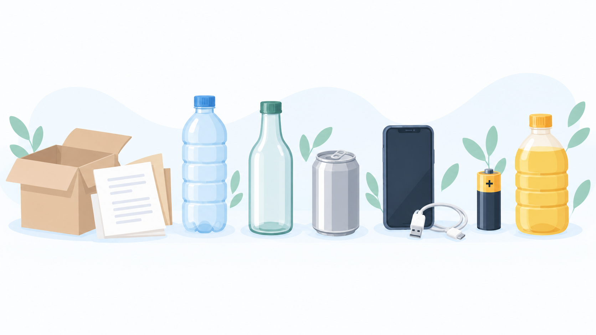

Papel
Papelão, folhas, jornais e outros materiais de papel.
Descubra pontos de coleta de acordo com sua região e com o material que deseja descartar.
Consulte alguns dos principais tipos de materiais e encontre locais adequados para o descarte

Papelão, folhas, jornais e outros materiais de papel.
Garrafas PET, embalagens, frascos e outros plásticos.
Garrafas, potes e outros recipientes de vidro reciclável.
Latas, peças metálicas e outros materiais de metal.
Celulares, computadores, cabos e equipamentos eletrônicos.
Pilhas domésticas e diferentes tipos de baterias usadas.
Óleo de cozinha usado que necessita de descarte adequado.
Conhecça alguns locais que recebem materiais para reciclagem em Sorocaba
Localização: Centro - Sorocaba
Materiais aceitos: Papel, plástico e vidro
Ver detalhesLocalização: Campolim - Sorocaba
Materiais aceitos: Eletrônicos, pilhas e baterias
Ver detalhesLocalização: Zona Norte - Sorocaba
Materiais aceitos: Vidro e metal
Ver detalhesCadastre seu ponto de coleta e informe quais materiais seu estabelecimento recebe.